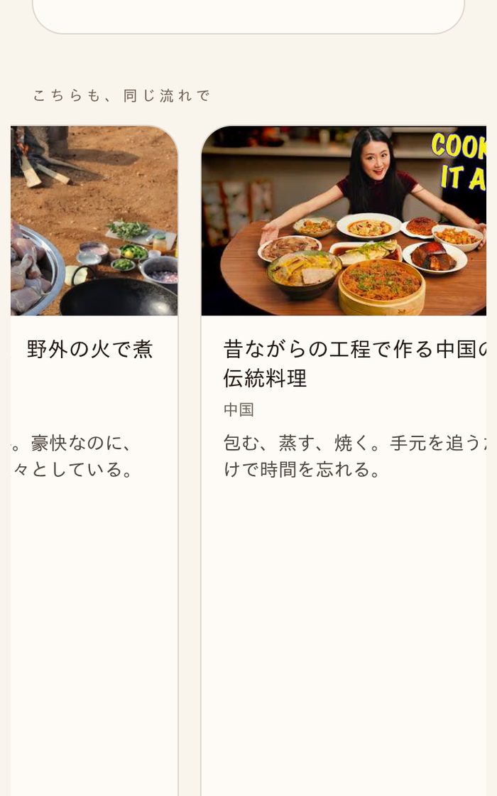

本番・現在（未修正のまま）PC横長
本番・現在（未修正のまま）スマホ375px

line-clamp-3と素のblockクラスが同じ要素に同居するとblockが勝ち行数制限が効かなくなる競合だった。GitHub mainではこの競合を除去済み（コミットcece339d）。ただし本番Lovableは2026-09-07夜から5日近く連続でビルドが全滅しており、公開ボタンを押しても反映されない。これは#749固有の不具合ではなくLovableプラットフォーム側の障害（案件#152・#690と同型の長期化）。

| 確認項目 | 結果 |
|---|---|
| コード：block×line-clamp競合を除去(cece339d) | 直った |
| コード：main合流 | 完了 |
| 公開：Lovable「変更を公開」クリック | 成功（ログ確認済み） |
| 本番：x-deployment-idの変化（＝実反映） | 15分待っても変化なし |
| 本番：Lovableビルド履歴 | 直近の全エントリが「ビルドに失敗しました」 |
| 原因の切り分け | #749のコードではなくLovable基盤側の障害と確認 |